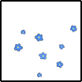

メインフェイズ サイクル2
グロキシニア：2d6
BloodMoon : (2D6) → 8[4,4] → 8
忽亡ゆかり：ふるぞー！
夜高ミツル：1d6
BloodMoon : (1D6) → 4
忽亡ゆかり：1d
BloodMoon : (1D6) → 4
糸賀大亮：1d6
BloodMoon : (1D6) → 5
乾咲フラン：1d6
BloodMoon : (1D6) → 4
乾咲フラン：ナニココ
グロキシニア：結局ラスト２回かよ！
夜高ミツル：また最後に二連？？？
乾咲フラン：（苦悶）
グロキシニア：大亮→ミツル・フラン・ゆかり→グロキシニア→グロキシニアで。
糸賀大亮：何でなんだ？
グロキシニア：知らないよ
乾咲フラン：死の暗示かよ
グロキシニア：さすがに途中で動ける出目だな？ って思ったのにな
グロキシニア：まあ２連続なのは確定の出目だったが……
夜高ミツル：後ろに控えてるのめちゃめちゃ嫌だな
糸賀大亮：マジで嫌なんだよな
乾咲フラン：とても、嫌ですね
夜高ミツル：なんかでも性格だよね
夜高ミツル：焦らず追い詰める感じがさあ……
行動：糸賀大亮
GM：STとか振ったらいいんじゃないでしょうか。任せますが……
糸賀大亮：ST
BloodMoon : シーン表(8) → 打ち捨てられた廃墟。荒れ果てた景色に心も荒む。
糸賀大亮：荒みました
乾咲フラン：街が廃墟になりつつあるんだよな
夜高ミツル：まあ廃墟だらけだよな
糸賀大亮：廃墟塗れだよ
糸賀大亮：心も荒む
GM：テンション28で余裕0で恐慌だし心も荒むわな。
糸賀大亮：なんか過剰投与もされたし
GM：焦るあまりに過剰投与しちゃった感じで……
夜高ミツル：連絡取り合って適当なところで落ち合ったのかな
糸賀大亮：まあ何かどこかの廃墟で……
GM：燃え尽きたあとの廃墟みたいな……
糸賀大亮：忽亡さんと夜高は一緒に行動してるだろうし、こっちも別れて行動はしてないだろう
夜高ミツル：ですね
糸賀大亮：「……例の消えない火に関しては、こっちで消し止めた」
糸賀大亮：とまあ、すでに連絡してたろうけど、あらためて報告しとくか。
乾咲フラン：「消し終わったところで、あの刀は消えてしまったよ」
忽亡ゆかり：「ありがとうございます」
夜高ミツル：良かったと思うものの、それを言える立場かと思うと。
夜高ミツル：「……そうですか」刀については頷いて。
GM：廃墟――今は焼け落ちた瓦礫の山となった一軒家からは、ぶすぶすと煙が上がっている。
GM：立ち並んでいた家屋のほとんどが似たような有様だ。住人たちは避難できただろうか。
GM：それを今の狩人たちが知るすべはない。
糸賀大亮：「火災がなくなったわけじゃないが、あとは消防隊に任せられそうだ。 奴を追うのに合流できるが、そっちは……」
糸賀大亮：言葉を切って、二人の様子を改めて見る。明らかに傷の増えている夜高に、眉根を寄せた。
夜高ミツル：「真城は……まだ、あいつが」
夜高ミツル：視線が落ちる。
夜高ミツル：いくつもの傷を負わされ、今もなお吸血鬼の手の内に囚われている真城を思う。
忽亡ゆかり：「吸血鬼に手間取りまして」
糸賀大亮：「……あんな奴が、今まで野放しだったとはな」
糸賀大亮：俯いた夜高を見て、どう声をかけていいか迷った。
乾咲フラン：「今回の奴はためらいがない。やっかいだな……」
夜高ミツル：「俺、だけじゃ、どうにもならなかった……」
夜高ミツル：傷口を抑える。
乾咲フラン：「……」
忽亡ゆかり：「そりゃ、そうでしょ。相手が相手だもん」
忽亡ゆかり：「いや、私もダメダメで。夜高くんに助けられました」
糸賀大亮：「……悪かったな」
糸賀大亮：「お前が刀を渡してくれたおかげで、こっちは何とかなった」
夜高ミツル：「……いえ」
夜高ミツル：「……俺は、俺が、真城を助けに行きたくて」
夜高ミツル：「だから、で……」
夜高ミツル：「……」
糸賀大亮：「……」
糸賀大亮：「あの吸血鬼は、何とかしなきゃならない」
糸賀大亮：大切な相手と大勢の人間の命を天秤にかけさせられる。そんなこと自体が間違っている。
乾咲フラン：「まあ、夜高クンが焦るのはわかる……」
夜高ミツル：助けるつもりで無茶して飛び込んで、その挙げ句に真城をまた傷つけさせた。
夜高ミツル：「真城を……」
夜高ミツル：「一緒に真城を助けてください」
夜高ミツル：「お願いします……」
糸賀大亮：そういう間違った瞬間に、あの時の夜高はいたんだろう。それをさせたのは、あの吸血鬼だ。
糸賀大亮：「ああ。奴に報いを受けさせる。……ここからは、こっちの手番だ」
夜高ミツル：「……ありがとう、ございます」
乾咲フラン：「ああ。……魔法の源泉にされているであろう真城を奪還しないとな。」
グロキシニア：「今となっては、そうでもないけどなあ」
夜高ミツル：「っ！！」
糸賀大亮：「……！」
乾咲フラン：うげぇ、って顔
グロキシニア：グロキシニアの声と同時に、
真城朔：狩人らの足元に真城の身体が転がされる。

真城朔：横たわったその身体の落とす影から、長い針が伸びて全員を襲った。
夜高ミツル：真城の方へ踏み出そうとして、先程のことが脳裏をよぎって躊躇った瞬間、針に襲われる。
乾咲フラン：「本当に、こいつは……！」美しくバク転で避ける。
忽亡ゆかり：「出たなこのやろーーーー！」
糸賀大亮：「チッ……」
糸賀大亮：もう持ちっぱなしの杭を手にぶら下げながら、後ろに飛びずさる。
夜高ミツル：「……っ、」
夜高ミツル：針を避けて、距離を取り直す。
グロキシニア：瓦礫を踏みしめて、投げ捨てた真城の隣へと進む。

グロキシニア：「これも――まあ、役に立たないことはないが」
グロキシニア：転がった真城の肩を蹴りつける。
糸賀大亮：好きに扱ってくれる。徹底して、他人の嫌なことをやるのが好きなんだろう。
グロキシニア：「別に必要不可欠なものじゃあない」
夜高ミツル：「じゃあ……！」
夜高ミツル：不意打ちを警戒しつつ、
夜高ミツル：ナイフを構えて飛び出す。
真城朔：「――う」
夜高ミツル：「真城を、返せ！！」
真城朔：ミツルが飛び出した矢先に吸血鬼の足に踏みしめられて、真城がかすかな呻きを漏らす。
糸賀大亮：「チッ……」
糸賀大亮：距離を探るさなかに夜高が飛び出したのを見て、吸血鬼の後ろに回ろうと駆け出す。
グロキシニア：足に体重をかけて前傾姿勢になりながら、吸血鬼は金色の瞳でミツルを見返す。
乾咲フラン：「ああもう、飛び出すなよ！」飛び出した夜高をカバーするように、グロキシニアに向かって飛び込んでいく。
夜高ミツル：「てっめぇ……！」
夜高ミツル：真城を踏みにじる吸血鬼の姿を見て、強く奥歯を噛む。
糸賀大亮：考えなしに突撃するのは俺の十八番なんだが……
糸賀大亮：「おい！」声をかけてから、背後から吸血鬼に杭を突き出す。
夜高ミツル：ナイフが吸血鬼の喉元を狙って閃く。
グロキシニア：その杭を半ばで握り止めて、
グロキシニア：杭ごと大亮を前方から突っ込んでくるミツルへと投げ込みます。
夜高ミツル：「……！？」
糸賀大亮：杭を離すのが間に合わない。歯噛みして、せめて肩口の方から夜高に向けて放り投げられる。
夜高ミツル：慌てて、手前に伸ばしていたナイフを引き戻す。
夜高ミツル：「ぐぅ……っ！」
夜高ミツル：大亮の身体を受け止める形になり、その衝撃が傷口に痛みを伝える。
グロキシニア：その挙動に伴って前足へと荷重がかかり、
真城朔：「ぁっ、ぐ……！」
真城朔：ぎし、と骨の軋む嫌な音が響く。
糸賀大亮：瓦礫の上に転がって、慌てて身を起こした。
夜高ミツル：「っ、真、城……！」
夜高ミツル：崩れそうになった脚に気合を入れて踏みとどまり、体勢を立て直す。
乾咲フラン：「ちっ……」もつれ合う二人を避けて、トンとステップを踏みグロキシニアの横合いへ蹴り込む。
グロキシニア：「君も」身を逸らしてフランの爪先をすれすれで躱しながら、
グロキシニア：「わだかまりがないでもないだろうに、随分と熱心だねえ」
グロキシニア：「偉いものだ。……ああ、いや」
グロキシニア：にやりと笑った。
グロキシニア：「そういうのが美しいと思ってるんだっけ？」
乾咲フラン：「……お前にはわからない事だ。」きゅっと着地して向き直りながら。
グロキシニア：「わからないね」
グロキシニア：「さすがに考えもしなかったなあ！」
グロキシニア：芝居めいた仕草で両腕を広げる。
グロキシニア：「母親のみならず、その息子にまで懸想を――いや、違ったな」
グロキシニア：「劣情を抱く、だったかな？」
グロキシニア：「随分と似通ったふうに育ってしまったというのは理解するけれど」
グロキシニア：また軽く真城を蹴りつける。
グロキシニア：「いやはや」
グロキシニア：「見境のないことで」
乾咲フラン：「それは美しくないって言った……だろっ！」舌打ちして、グロキシニアの足元に蹴りを見舞おうと。
夜高ミツル：フランに注意を向ける吸血鬼に、横から斬りかかる。
忽亡ゆかり：フランの後ろから飛び出し、合わせるようにナイフを構えて突きを放つ。
グロキシニア：足を引いて、真城の身体を蹴り上げる。
糸賀大亮：杭を構えて、息をついた。吸血鬼との距離を再び測る。
乾咲フラン：真城はサッカーボールじゃないんだぞ！と内心で怒りながら振り抜きかけた足をぐんと反らす。
グロキシニア：その首根っこを掴むと、力の入らない真城の身体を武器のように振り回してミツルとゆかりに向けた。
グロキシニア：「美しくは、ないな」
グロキシニア：「まったくその通り」
夜高ミツル：「……っ！！」
グロキシニア：「だが――欲が消えたわけではないだろう？」
夜高ミツル：そうされれば、ミツルは武器を引くしかない。
夜高ミツル：歯噛みする。
忽亡ゆかり：「ちょっ」横からぶつかる形で吹き飛ばされる。
グロキシニア：「どこからともなく現れた馬の骨が朔に溺れている今に」
グロキシニア：「忸怩たる思いを抱いたことは？」
乾咲フラン：無理に反らした力に任せて体を翻し、今度は地を刈るように足を振る。「お喋りだな！」
グロキシニア：「それが許されているからなあ！」地を蹴ってそれを躱す。
乾咲フラン：打ち直す前 「お喋りクソ野郎！」
糸賀大亮：ヒヒヒ
夜高ミツル：でもお喋りクソ野郎だよ
グロキシニア：美訂正
糸賀大亮：オシャクソ吸血鬼
グロキシニア：真城を抱き寄せて、頬を寄せて、また嗤う。
グロキシニア：「今は俺のものだがね」
夜高ミツル：「……て、めぇ……！！」
グロキシニア：「否定できるかい？」
グロキシニア：ミツルを見る。
グロキシニア：「君には何もできなかったろう？」
グロキシニア：「最初から最後まで」
グロキシニア：「じっくりと見せつけてやったもんなあ？」
夜高ミツル：「黙れ……！！」
糸賀大亮：なんか変わったことができるわけではないな。
糸賀大亮：構えて突貫、杭を囮に殴りかかるぐらいだ。タイミングを見計らって…
糸賀大亮：支配力の真城を狙います
グロキシニア：はい、日常から判定をどうぞ。
糸賀大亮：興奮剤使用するか。
糸賀大亮：2D6+3>=7 （判定：待つ）
BloodMoon : (2D6+3>=7) → 8[2,6]+3 → 11 → 成功
糸賀大亮：見計らった。
乾咲フラン：待てができる
グロキシニア：支配力：真城朔 3→2
グロキシニア：先程のようなことを。
グロキシニア：真城を抱き寄せてグロキシニアが嗤う。
グロキシニア：ミツルへと目を向けて、
夜高ミツル：何もできなかった、とは吸血鬼にあざ笑われた通りで、
グロキシニア：胸元を引き裂かれて顕になった首へと――今も血を滲ませているそこへと、
グロキシニア：大きく口を開けて牙を寄せ。
夜高ミツル：「や、めろ──！！」
糸賀大亮：吸血鬼の眼前に杭が迫る。
糸賀大亮：先程とは違い、妙に力ない動きで。
グロキシニア：その杭に目を向けて、ぴたりと動きを止める。
グロキシニア：真城を掴んだ腕をそちら側へと向けるが。
糸賀大亮：放り投げられた杭は、あっさりとその腕に当たって瓦礫の上に落ちた。
糸賀大亮：そのまま、吸血鬼の顔に向けて拳を振り抜ける。
グロキシニア：「――！」
グロキシニア：瞠目した顔へと、大亮の拳がもろにめり込む。
グロキシニア：盾にしかけた真城を胸元に引き寄せてたたらを踏み、
グロキシニア：影の針を伸ばして追撃を牽制しながら、数歩下がる。
糸賀大亮：そのまま前転して、針を大げさに避けた。
糸賀大亮：落ちた杭を拾い上げて、夜高の方をちらりと見る。
グロキシニア：すぐに片腕で顔面を覆い、影を落とす。
グロキシニア：再び面を上げた時には殴打の跡など残らぬ平常のさまを取り戻して、
夜高ミツル：その視線を受けて、
夜高ミツル：吸血鬼へ向かって駆ける。
グロキシニア：「はあ」
グロキシニア：「夕暮れの川辺で殴り合う――なんて仲でも」
グロキシニア：「なかったと思うけれど」
糸賀大亮：「そうだな！」杭を構え直しながら乱暴に答えた。
グロキシニア：大亮へと軽く語りかけながら、
グロキシニア：駆けてくるミツルには視線を向けず。
グロキシニア：BRT
BloodMoon : 身体部位決定表(9) → 《呼吸器》
真城朔：「――っ」
真城朔：ばぎ、と嫌な音がして、
真城朔：真城の唇から呼気が漏れた。
行動：夜高ミツル
夜高ミツル：対象真城で狩猟します 常識を組み合わせてグロキシニア：はい、日常からで。
夜高ミツル：興奮剤を使います
夜高ミツル：2D6+2+2>=8 （判定：現れる）
BloodMoon : (2D6+2+2>=8) → 6[1,5]+2+2 → 10 → 成功
グロキシニア：では、支配力：真城朔が破壊されました。
夜高ミツル：夜高ミツルのテンションが3増加！（テンション：20->23）
グロキシニア：支配力：真城朔 2→0
グロキシニア：グロキシニアへ1個の部位ダメージ！（部位ダメージ：1->2）
夜高ミツル：ナイフを手に、吸血鬼の背後を狙う。
グロキシニア：「なあ」
グロキシニア：ミツルを振り返る。
グロキシニア：「ヨかったかい？ 朔は」
夜高ミツル：「…………っ！！」
グロキシニア：「俺が躾けて、仕立て上げた子だけれど」
グロキシニア：その顎を掴んで顔を上げさせる。
グロキシニア：「まあ見事に気に入ってくれたみたいじゃあないか」
夜高ミツル：「真城、を」

夜高ミツル：真城を前に出されれば、ナイフを持つ右手が止まり、
夜高ミツル：代わりに左手が、真城の横合いを抜けて吸血鬼の懐へ潜り込む。
グロキシニア：肉薄されながら、ミツルへと視線を返す。
グロキシニア：「――まさか」
グロキシニア：「自分のものだとでも？」
夜高ミツル：「──そうだ」
夜高ミツル：左手に持った拳銃を、吸血鬼の脇腹に押し当て
夜高ミツル：引き金を引いた。
グロキシニア：「――ッ！！」
グロキシニア：吸血鬼の脇腹で銃砲が火を噴く。
夜高ミツル：二度、三度と引き金を引く。
グロキシニア：「が……」

グロキシニア：拳銃ごとミツルの腕を濡らした。
グロキシニア：吸血鬼の膝から力が抜ける。
グロキシニア：ノータイムで肯定した……
糸賀大亮：目をかっぴらいたままそうだって
糸賀大亮：即答した
糸賀大亮：怖い
乾咲フラン：出た！ミツルくんの反社攻撃！
忽亡ゆかり：あいつマジでキマってんな
グロキシニア：どうぞ。
グロキシニア：真城を掴む腕からも力が緩む。
夜高ミツル：撃ち尽くした拳銃を投げ捨て
夜高ミツル：「──真城！！」
夜高ミツル：その腕の中から、真城を奪い取る。
真城朔：血に濡れた薄い身体が、ミツルの腕に収まる。
真城朔：――まだ熱がある。
真城朔：命あるものの持つ熱が、その身体には、まだ辛うじて。
夜高ミツル：奪い返した勢いのままに、真城を抱いて地面を転がり吸血鬼から距離を取る。
夜高ミツル：生きている。
夜高ミツル：まだ、息がある。
グロキシニア：影が、花弁が立ちのぼる。
グロキシニア：それが吸血鬼の脇腹を覆い尽くして、ぐちゃぐちゃに穴を開けられた傷を塞いだ。
夜高ミツル：「ま、しろ」
真城朔：「…………」
真城朔：ミツルの胸に身体を預けたまま脱力している。
夜高ミツル：「真城、真城……っ！」
真城朔：それが、その右の瞼が、やがてぴくりと動いた。
夜高ミツル：「……！」
真城朔：ゆっくりと右目が開かれる。
真城朔：「ぁ」
夜高ミツル：「真城……！！」
真城朔：「ミツ」

夜高ミツル：「すぐ、助けられなくて」
夜高ミツル：「遅くなって」
夜高ミツル：「ごめん、真城……！！」
真城朔：「…………」
真城朔：呆然とミツルを見上げて、何度か目を瞬き。
真城朔：その唇が震えて、何か紡ごうとした矢先、
真城朔：二人の影から針が伸びた。
真城朔：無防備な二人を狙って、貫くように、影が鋭く長く伸びる。
夜高ミツル：「……っ！！」
夜高ミツル：反射的に、真城を針から庇うように抱え込む。
忽亡ゆかり：「はっ！」
忽亡ゆかり：サッカーボールを蹴り飛ばすように、横からその針へと向けて足を振り上げる。
グロキシニア：二人へとめがけて伸びる半ばで、再びその針が蹴り折られる。
夜高ミツル：真城を腕の中に抱いて
夜高ミツル：予期していた痛みはしかし、やってこなかった。
忽亡ゆかり：足の隙間から、グロキシニアへとナイフが飛ぶ。
グロキシニア：首を逸らす。
グロキシニア：ゆかりの投げたナイフは首を薄く切り裂いて、焼け焦げた地面へと転がった。
グロキシニア：「…………」
夜高ミツル：「忽亡、さん……」
忽亡ゆかり：「っし、真城奪還！」
真城朔：ミツルの腕の中で目を瞬いている。
グロキシニア：そうして吸血鬼は一歩前に出ると、
グロキシニア：「……『そうだ』」
グロキシニア：「とは、ねえ」
グロキシニア：どこか呆れた様子でそのように吐き捨てた。
行動：忽亡ゆかり
忽亡ゆかり：前哨戦、対象はフォロワー『フォゲットミーノット』グロキシニア：OK
グロキシニア：なんかそれっぽい力の塊を見つけてどうのこうの考えてはいたけどもう殴っちゃえ
グロキシニア：EX話だし話を早くやろう。
糸賀大亮：イェイイェーイ
夜高ミツル：暴力！
忽亡ゆかり：じゃあ…殴る！
グロキシニア：なんか殴る狩猟全然やってこなかったからな１話以来……
夜高ミツル：一話への回帰だなあ
グロキシニア：２話でもう相談室を強いていた俺ら
忽亡ゆかり：自分のクソ恥ずかしいプライベートを吐き出したり、他人のクソ恥ずかしいプライベートを覗き見たりしたな
グロキシニア：たのしかったね～
乾咲フラン：尊厳の殴り合い
糸賀大亮：尊厳が地にまみれる大人たちを見た
グロキシニア：元から尊厳が低かったから見逃された人
糸賀大亮：はい……もともと尊厳がありませんでした……
グロキシニア：肯定
乾咲フラン：かわいそ
真城朔：「…………」
真城朔：ミツルの腕の中で、肩を強張らせる。
夜高ミツル：抱く腕に力を込める。
グロキシニア：「君さ」
夜高ミツル：「真城」
グロキシニア：「それのものなのかい？」
真城朔：「…………」口を噤んだまま、ぶるりと身を震わせた。
グロキシニア：「まあ、好きに言ってて構わないけど――」
グロキシニア：狩人たちに視線を巡らせて、
グロキシニア：「君たちはそれを祝福してるってわけだ」
糸賀大亮：相変わらず、嫌な喋り方をする奴だ、と黙っている。
忽亡ゆかり：「……」肯定でも否定でもなく、肩をすくめる。
夜高ミツル：もう奪わせる気はない、と真城を抱き寄せる。
乾咲フラン：モノっていうのとはちょっとアレだけどこう……あるだろいろいろと、と複雑な顔になった。
グロキシニア：「いやあ」
グロキシニア：「心が広くて結構」
グロキシニア：「家族を、仲間を殺されて」
グロキシニア：「あるいはぽっと出に横取りされて」
グロキシニア：「それでも仲良しこよしでやってられるとは」
グロキシニア：「麗しい連帯で素晴らしいじゃないか」
真城朔：視線を落として、唇を噛んでいる。
糸賀大亮：「お前が言うな」
忽亡ゆかり：「褒めてくれてありがとう」
忽亡ゆかり：懐からナイフを何本か取り出し、手に取る。
夜高ミツル：「……真城」
夜高ミツル：「聞くな」
夜高ミツル：「聞かなくていい」
夜高ミツル：「あんな奴の言うこと」
グロキシニア：「美しい光景だよねえ」
グロキシニア：燃える街を見渡して。
グロキシニア：「ここまで街中燃えてしまったら、避難だって難しいだろう」
グロキシニア：「いつどこが燃えるともわからない」
グロキシニア：グロキシニアの語る最中にも、遠くからサイレンの音が響いてくる。
グロキシニア：「魔法ってのは素晴らしいね」
グロキシニア：「壊すも歪めるも、血戒なんかとは比べ物にならない」
グロキシニア：「本当は」
グロキシニア：「一年前には手に入るはずだったのになあ」
忽亡ゆかり：「そうだね、ずいぶんやってくれたもんだ」
忽亡ゆかり：「今この時も、消防さんが頑張っていらっしゃる」
グロキシニア：「その消防も、どこまで頑張れるやら」
グロキシニア：「或いはそこから何人被害が出るやら」
グロキシニア：「まあ、俺の知ったことではないけれど……」
忽亡ゆかり：「それは今の私たちが考える事でもない。やる事は決まってんだ」
グロキシニア：ゆかりを見る。
忽亡ゆかり：「こっちの仕事は、元を断って……」
忽亡ゆかり：「これ以上被害を出せないようにする、ってね！」構えたナイフを投げつける。
グロキシニア：「元！」
グロキシニア：「元、ねえ――」
グロキシニア：「まあ、君たちが誰を――何を元と見定めるかどうかは、勝手だけれど」
グロキシニア：投げつけられたナイフをステップで躱して、黒いコートを翻らせながら、
グロキシニア：「ひとつ、事実だけは忘れるなよ」
グロキシニア：「一年前に朔が死んでいれば」
グロキシニア：「この禍災は免れたってことをな！」
夜高ミツル：「てめぇ……！！」
忽亡ゆかり：「下らねーな！」

忽亡ゆかり：「ムカつく奴をブン殴れて、火も止まるなんて、お得なコースだこった！」突っ込んで回し蹴り。
グロキシニア：AST 前哨戦特技
BloodMoon : ランダム全特技表(2,6) → 頭部6：考える
乾咲フラン：援護しますか
忽亡ゆかり：しなくても割と安全圏
夜高ミツル：振り直しくるから
夜高ミツル：援護しといてほしいですね 激情もほしいし
乾咲フラン：調達のこともあるしな 援護しますう
忽亡ゆかり：振りなおした時点でノルマクリアみたいなもんだし、いいんじゃない？
夜高ミツル：確かに
グロキシニア：dotti demo iiyo~
夜高ミツル：まあ激情激情
忽亡ゆかり：調達前に激情得られないんだっけフランさんは
グロキシニア：調達この直後だよ！
乾咲フラン：これ以外では多分そう
糸賀大亮：うむ
グロキシニア：うむ亮
忽亡ゆかり：ああっそうかブランド品は
忽亡ゆかり：じゃあ……フランさんの裁量で！
乾咲フラン：常駐…！
グロキシニア：常駐だし、補助だったとしても判定後に激情を得る形になるので
夜高ミツル：援護GOGO
グロキシニア：その判定には激情使えないっすよ
忽亡ゆかり：せやったな
グロキシニア：では援護もらった上で打撃力つけてふってください
忽亡ゆかり：援護もらいます
忽亡ゆかり：2D6+4+1>=7 （判定：見る）
BloodMoon : (2D6+4+1>=7) → 5[1,4]+4+1 → 10 → 成功
グロキシニア：-3をつけて振り直しを。
忽亡ゆかり：2D6+4+1-3>=7 （判定：見る）
BloodMoon : (2D6+4+1-3>=7) → 12[6,6]+4+1-3 → 14 → スペシャル(【余裕】+3）
忽亡ゆかり：余裕
糸賀大亮：マジで
夜高ミツル：つえ～
糸賀大亮：やったぜ
グロキシニア：ではLv6犯罪者フォロワー『フォゲットミーノット』は排除されます。
夜高ミツル：乾咲フランのテンションが3増加！（テンション：9->12）
夜高ミツル：乾咲フランは激情を獲得！（激情：0->1）
夜高ミツル：忽亡ゆかりの余裕が3増加！（余裕：8->11）
グロキシニア：かわいそうだと思わないんですか？ 上位犯罪者ですよ？
忽亡ゆかり：ボーナスステージじゃん
夜高ミツル：上位犯罪者仕事したことねえな
グロキシニア：３話が一番仕事した
糸賀大亮：あれはめちゃくちゃ嫌だった
夜高ミツル：ああ……調達……
乾咲フラン：最悪だった
忽亡ゆかり：じゃ、回し蹴りの回避に合わせて魔力の源っぽい部分に投擲しますかね（魔力の源っぽい部分とは？）
グロキシニア：むしろ怪我した脇腹とかどうですか
グロキシニア：あのガンギマリ野郎……
夜高ミツル：ギャハハ
忽亡ゆかり：そうしよう
グロキシニア：身体を逸らしてゆかりの蹴りを避ける。
グロキシニア：その動きにより、黒い影に覆われた脇腹がゆかりへと剥き出しになる。
忽亡ゆかり：蹴りを振り切った瞬間、死角のナイフが見える。
グロキシニア：「！」
忽亡ゆかり：脇腹の傷へとそれが突き刺さった瞬間
忽亡ゆかり：「そら！」
忽亡ゆかり：軸足を変えて、次の蹴りがナイフの柄を叩いた。
グロキシニア：手応え。
グロキシニア：ナイフが脇腹深くを抉り抜いて、影の隙間から血が溢れる。
忽亡ゆかり：「ハッハア！」
グロキシニア：溢れた血が宙でばさりと霧散して、
グロキシニア：見覚えのある青い勿忘草の花弁が散った。

グロキシニア：グロキシニアが下がる。グロキシニア：「…………」
グロキシニア：「まあ」
グロキシニア：「君は、そうか」
グロキシニア：「構わないのか」
グロキシニア：ぼたぼたと血を滴らせながら、ゆかりを見る。
忽亡ゆかり：「ああ？」
グロキシニア：「なにせ」
グロキシニア：「もっと都合のいい、代わりを手に入れたんだからなあ？」
グロキシニア：にやりと笑ってそう吐き捨てると、
グロキシニア：グロキシニアの全身が影に包まれる。
グロキシニア：ばさりと深紅の花弁を散らして、その姿を掻き消した。
忽亡ゆかり：「…………ふん」
忽亡ゆかり：「下らない。負け惜しみだ」
乾咲フラン：「全部の元凶のくせにな～」
真城朔：「…………」
忽亡ゆかり：「無事か？」
夜高ミツル：真城を抱えたまま、吸血鬼が姿を消したのを見て息を吐く。
真城朔：「あ、……」
真城朔：ゆかりに呼びかけられて顔を上げる。
真城朔：「…………」
真城朔：「俺は」
真城朔：「別に、……」
真城朔：彷徨わせた視線を地面へと落とす。
糸賀大亮：周囲を見回してから、夜高たちの方へ歩み寄った。
夜高ミツル：「さっきの、ありがとうございました、忽亡さん」
忽亡ゆかり：「勘違いすんなよ。真城を助けたわけじゃない」
忽亡ゆかり：「そいつが手元にないと、この夜高ってやつがコントロールできないから仕方なくだからな！」
夜高ミツル：話ができる状況になったことで、今更頭を下げる。
真城朔：「……すみません」
真城朔：同じく頭を下げて、立ち上がる。
忽亡ゆかり：「お礼を言われることじゃない。動ける？」
夜高ミツル：ミツルも立ち上がって、横から真城を支える。
真城朔：へし折られた左腕がだらりと下がっている。苦痛に僅か顔を顰めるが。
真城朔：「大丈夫です」
真城朔：「俺は、全然……」
夜高ミツル：「大丈夫じゃねえだろ……」
真城朔：支える腕から離れて立ちます。
真城朔：ミツルの声に、びくりと肩を震わせる。
真城朔：けれどもう一歩前に、ミツルから離れて進んで、
真城朔：「今は」
真城朔：「あれを」
真城朔：「グロキシニアを、やらないと……」
夜高ミツル：離れようとする真城の腕を取る。
真城朔：「っ」
乾咲フラン：「やるために、まずは準備だよ」
乾咲フラン：「補給、しに行くか」
糸賀大亮：「異存はない」頷きながら。
夜高ミツル：「真城」
夜高ミツル：「乾咲さんの言うとおりだ」
真城朔：「…………」
乾咲フラン：「ほら夜高クン」先程Memoryの子らに貰った輸血パックを手渡す。
夜高ミツル：輸血パックを受け取って、真城に差し出す。
糸賀大亮：「単独行動を取ろうなんて思うなよ」と、真城に釘を刺しておく。
真城朔：輸血パックを受け取って俯く。
真城朔：「……しませんよ」
真城朔：「俺じゃ、あいつに勝てないから……」
忽亡ゆかり：「……手持ちは？」全員を見る
糸賀大亮：「俺の方は少し遣い過ぎだ。手当もいるな」
忽亡ゆかり：「……夜高くんも、少し休ませる必要があるか」
夜高ミツル：「俺は……」大丈夫、とつい言いかけて。
夜高ミツル：「……そうですね、お願いします」
忽亡ゆかり：「よし、決まり」
糸賀大亮：「……倒すために集まってる。少しでも回復してもらうからな」
真城朔：頷く。ミツルの腕を振り解いて。
真城朔：「……行きましょう」
行動：乾咲フラン
乾咲フラン：場所振っちゃうか
乾咲フラン：ST
BloodMoon : シーン表(6) → 普通の道端。様々な人が道を行き交う。
夜高ミツル：普通の道端……？
GM：フラン邸でいいのでは？
乾咲フラン：笑った
夜高ミツル：普通の道端ないでしょもう
糸賀大亮：謎の行商がアタッシュケースを持って
忽亡ゆかり：美メイドが行ったり来たりしてるからな
GM：行き交ってるね～
乾咲フラン：普通の道端はないけど避難民だらけそう
GM：では避難民でごった返しましょうか。
GM：ごった返しってほどでもないかな……まあほどほどにいます。
乾咲フラン：ボタンをタイミングよく押して知り合いに話しかけアイテムをもらおう
夜高ミツル：そういうゲームだったのか……
野嶋優香：「ここもいつまた燃えるかも分かりませんから……」って優香は避難民に警戒を促していますが。
野嶋優香：促しつつ切り盛りしています くるくる
真城朔：真城は道中で輸血パックを啜って今は腰を下ろして休んでいますが、
真城朔：大きな傷は残ったままですね。潰された左目も、折られた左腕も治っていない。
夜高ミツル：真城の隣に腰を下ろす。
乾咲フラン：「野嶋クン、様子はどうだい？」避難民が美を見て応答停止する中をかき分けてフランがやってきます。

野嶋優香：「手筈通り、行き場をなくした人々をいくらか収容しておりますが――」
野嶋優香：「パニックを抑えるので精一杯、といったところでしょうか」
野嶋優香：「この事態ではお茶を振る舞うわけにもいきませんし、いつここからも避難しなければならなくなるかも分かりませんから……」
乾咲フラン：「ありがとう、魔法の炎は止める事が出来たから後は消防に頑張ってもらうしかないが、この状況だ……」
乾咲フラン：一部の避難民は光るフランを見て口をあんぐり開けて居るものなどがいます
野嶋優香：野嶋の後ろを美メイドがぱたぱたと怪我の処置などに走り回っています。
野嶋優香：毛布を運んできたり、お茶は無理でも茶菓子を配ったりなどしている。
乾咲フラン：「苦労を掛けるが……君たちにはもう少し頑張ってもらうことになりそうだ」
野嶋優香：「最善を尽くします」
野嶋優香：「フラン様もお気をつけて」
乾咲フラン：「ああ、ありがとう」
野嶋優香：「はい――お任せください」
野嶋優香：「私達、乾咲邸の美メイドですから！」
野嶋優香：胸を張ります。
真城朔：真城はぼんやりと避難民や美メイドが行き来するのを見ています。
夜高ミツル：手に包帯とかを持って、多分いつもやってるように真城に応急処置してもらおうかと思ったんですが。
GM：さて。
GM：ここでGMから提案ですが。
乾咲フラン：コワ～ はい
夜高ミツル：なんだ～？
糸賀大亮：えっなにこわい
GM：ミツルの血量を減らすことで、真城の部位ダメージを回復させることを許可します。
糸賀大亮：なるほど
夜高ミツル：はは～～～ん
乾咲フラン：はっは～～
GM：血量３ごとに１部位。８減らすならからっけつボーナスで３部位にさせてあげていいですよ。
糸賀大亮：からっけつボーナス
乾咲フラン：結局セックスされるんじゃん
夜高ミツル：ははは
夜高ミツル：今5部位
乾咲フラン：オギャ～
GM：まあ他の人が減らすのならそれはそれでいいですけど？
GM：他の人の血吸わせます？
夜高ミツル：やだな……
GM：コワ……
忽亡ゆかり：インナーミツルが…
忽亡ゆかり：乾咲フラン、必ず寝取られる男
乾咲フラン：ま～たセックスされる それはそれとして
夜高ミツル：やりますけど何部位回復させるのがよいんだ？
夜高ミツル：ミツルの血はいくらでも削っていいので数字に強い人検証してください
GM：いくらでも削っていい
乾咲フラン：3の倍数+1ぐらいに…？
GM：一応調達に関係する話なので先に出しました。
夜高ミツル：空にするなら流血が怖いから医療キット1個調達してもらえるといいかなくらい
糸賀大亮：そうだね。
乾咲フラン：なるほどね
糸賀大亮：7部位まで回復させるとなると2部位回復か
糸賀大亮：全部で10部位でいいんだよね身体部位
GM：そうですね
真城朔：そんな感じで、真城は椅子に座ってぼんやりと休んでいます。
真城朔：避難民たちからは結構離れた場所にいる。
真城朔：まあ見た目が異様だからなそもそも。狩人たちは全体的にそうだよね。
夜高ミツル：「……怪我」
夜高ミツル：「……大丈夫じゃなさそうだな」
真城朔：「…………」
真城朔：「ミツの方が……」
真城朔：血塗れの様子を見ます。
夜高ミツル：「いや……」首を振る。
真城朔：「俺は、これでも別に、動けるし」
真城朔：「たぶん、治るし……」
夜高ミツル：「……俺がもっと強ければ」
夜高ミツル：「もっとはやく、助けられてたら……」
夜高ミツル：詮無いことを呟いて、視線が落ちる。
真城朔：「…………」
真城朔：「……モンスター相手なら」
真城朔：「俺の方が強いから」
真城朔：「俺の責任だよ」
夜高ミツル：「でも、今日動けたのは俺の方で、だから」
夜高ミツル：「俺が、もっとちゃんとしないといけなかったんだ……」
真城朔：「…………」
夜高ミツル：真城の身体に腕を回して、抱き寄せる。
真城朔：「っ」
真城朔：力なくもがいて、視線を落とす。
夜高ミツル：「遅くなって、ごめん」
真城朔：「ちがう……」
夜高ミツル：「真城が、生きてて、よかった……」
真城朔：「ミツは悪くない」
夜高ミツル：背に回した指先が震えている。
真城朔：「俺の、せいで」
真城朔：「俺の……」
夜高ミツル：「違う」
真城朔：街が、と、消え入るような声で。
夜高ミツル：「真城のせいじゃない」
真城朔：「…………」
真城朔：「……早く、行かないと」
真城朔：「ミツも」
真城朔：「ちゃんと手当てして」
真城朔：「メイドさんたちに……」
真城朔：ちょっと遠くで行き交う美メイドたちに視線をやります。
夜高ミツル：「……その前に」
真城朔：「？」
夜高ミツル：真城の後ろ頭に手を回して、自分の首筋に押し付ける。
夜高ミツル：「血」
夜高ミツル：「足りてないだろ」
真城朔：「っ！？」

真城朔：何部位回復します それで
真城朔：前提として真城は結構嫌がりますが……（表を見ていれば一目瞭然だが……）
夜高ミツル：そりゃそうだろうね
糸賀大亮：2部位かなあ。
夜高ミツル：えーと6かな？
糸賀大亮：6でいってみよう
真城朔：２部位ですね。はい。
真城朔：ええー……
夜高ミツル：嫌そう……
真城朔：これはGMのええーではなく……
夜高ミツル：わかるわかる
夜高ミツル：真城いやだよね……
真城朔：「…………」
真城朔：「……ミツも」
真城朔：「血が……」
夜高ミツル：「まだ」
夜高ミツル：「大丈夫だから……」
夜高ミツル：「……真城の方が強いなら」
夜高ミツル：「真城が動けたほうがいいだろ」
真城朔：「じゃあ」
真城朔：「せめて」
真城朔：「他の人、とか……」
真城朔：「ミツも、戦うのに」
夜高ミツル：「……誰に？」
乾咲フラン：「ちょっと二人とも何イチャイチャしてるんだよ～！」バタバタとしているところで二人のところにやってきて「真城にもこの後戦ってもらうんだから！夜高クングッと飲ませちゃいなよ！輸血パックもちょっと電話しておくからさ～！」
真城朔：「…………」
真城朔：おろおろとフランを見ます。
夜高ミツル：びっくりしている。
乾咲フラン：「一旦グッと治して！」
乾咲フラン：栄養ドリンクのような仕草。
真城朔：「……うう」
真城朔：呻いた。
真城朔：フフ……
忽亡ゆかり：フランさんでダメだった
糸賀大亮：いきなり
真城朔：カップルの空気感を壊してくれてありがたい
忽亡ゆかり：勢いがすごい
糸賀大亮：栄養ドリンクだめ
夜高ミツル：たすかる～
夜高ミツル：言ってるぞ……と、ちょっとオロオロしつつ。
真城朔：「…………」
真城朔：困ったようにフランを見ます。
乾咲フラン：「ほらちょっと影でキュッと……あっ！コラ！茶菓子の取り合いはやめなさ～い！」争い始めた避難民の子どもたちのところに走って行った。
真城朔：嵐のように訪れて去っていく美を見送ります。
夜高ミツル：「……ほら」
夜高ミツル：再び真城の顔を自分の首筋に押し付ける。
真城朔：「んっ」
真城朔：「……う」

夜高ミツル：「いいから」
夜高ミツル：「ほら」
真城朔：「うぅー……」
真城朔：不満そうに声を漏らしていましたが。
乾咲フラン：今ここにフランがいれば「そーれイッキ イッキ」と応援していたことでしょう
夜高ミツル：飲むまで離さないぞという姿勢。
真城朔：やがて諦めたように脱力して、
真城朔：ミツルの身体に体重を預けて、凭れかかる。
真城朔：「……ヤバそうだったら」
真城朔：「ちゃんと、止めて」
夜高ミツル：「……ん」
真城朔：「ミツが……」
夜高ミツル：「分かってる」
真城朔：でないと、と消え入るような声。
真城朔：頷く。
夜高ミツル：真城の体重を、熱を、しっかりと受け止める。
真城朔：暫くそのままぐずぐずと逡巡していたが、
真城朔：やがて大きく口を開いて、
真城朔：その首筋に牙を立てた。
真城朔：瞼を伏せる。
真城朔：えーと
真城朔：あとは飛ばしでいいかな？？？
真城朔：暗転すっぞ！
乾咲フラン：アイテム考えようぜ～！
夜高ミツル：血量飛ばしとくかとりあえず
夜高ミツル：夜高ミツルの血量が6減少！（血量：8->2）
GM：部位も２個回復で
夜高ミツル：どの部位？ランダム？
GM：好きなとこでいいですよ
GM：あんま関係ないし……
夜高ミツル：まあね……
GM：今は感覚器、逆腕、呼吸器、口、消化器だな。
GM：口壊れてなさそうだったけど何されたんですかね（笑）
GM：２部位好きなところをどうぞ。
夜高ミツル：じゃあ感覚器と逆腕にしとこうかな……
GM：はーい
夜高ミツル：わかりやすいし
GM：見た目の問題
GM：真城の部位が２部位、感覚器と逆腕が回復します。
真城朔：はい、何を調達しますか？
糸賀大亮：ほんとじゃん
夜高ミツル：ウケる
GM：調達はどうしましょう。
乾咲フラン：考えます
GM：考えている悪のフラン
乾咲フラン：では調達 護符3 鎮静剤1 骨1 興奮剤3 遺物1 聖水1
GM：フラン邸にはなんでもあるなあ
夜高ミツル：興奮剤使うよね？
乾咲フラン：興奮剤使います
GM：はーい。行動力3と興奮剤の2をあわせてどうぞ。
夜高ミツル：ゴーゴー
乾咲フラン：伝えるで判定し……美メイド間での伝言リレーが始まります
乾咲フラン：2D6-12+5>=5 （判定：伝える）
BloodMoon : (2D6-12+5>=5) → 9[3,6]-12+5 → 2 → 失敗
夜高ミツル：さすが～
忽亡ゆかり：神
糸賀大亮：6出てる～
GM：激情切ります？
乾咲フラン：激情使って腹から声を出し美メイドたちからアイテムを持ってきてもらいましょう この3は6
糸賀大亮：フランの美しい声が屋敷に響き渡る
忽亡ゆかり：腹から声を出すとアイテムが増える
GM：はーい。スペシャルはないけど余裕は回復なんだよな。
夜高ミツル：伝わってくる
夜高ミツル：乾咲フランは激情を使用！（激情：1->0）
夜高ミツル：乾咲フランの余裕が3増加！（余裕：8->11）
糸賀大亮：やったぜ
夜高ミツル：興奮剤1個輸血パックにしてもらえばよかったかな（アフターフェスティバル）
GM：流石に後の祭りですね。
糸賀大亮：うっかりしていた
夜高ミツル：うん……
夜高ミツル：そういうときもある
乾咲フラン：まあ先制とるために余分に使える使える
乾咲フラン：「2階の客間の隣の部屋のクローゼットの中の二段目の隠し扉の……」難しい位置にあった魔女の遺物とか聖水を持ってきてもらいました
GM：ぱたぱたと美メイドが調達物資を持ってフランさんの元へと訪れます。
GM：で、その美メイドがですね。
GM：「フラン様、実は……」
乾咲フラン：「なにっ」
GM：「先程屋敷が燃やされた時に」
GM：「実は、フラン様の私室にも火が至りまして……」
GM：言いづらそうに報告します。
乾咲フラン：「…………続けて……」
GM：「ですので、恐らく……」
GM：「中の……」
乾咲フラン：「…………そうか……」

乾咲フラン：碧の写真とか。
GM：碧と自分が映った写真や。
GM：あの日に届けられた手紙も。
GM：それを優香が報告しなかった理由は分かりませんが……
GM：この美メイドは優香の報告を隣で聞いていたので、伝える必要があると思ったのでしょう。
乾咲フラン：「……ありがとう、……では、仕事に戻ってくれたまえ」
GM：「はい、それでは……」
GM：ぺこりと美メイドが頭を下げて戻ります。
野嶋優香：優香も慌ただしく走り回っていますね。
糸賀大亮：フランさんの部屋が
夜高ミツル：かわいそう……
GM：燃えてたしな……と思って……
夜高ミツル：碧の思い出を幸福で持ってるのに思い出燃やされるのめっちゃかわいそう
GM：では……はあ……
夜高ミツル：ため息つかないで
真城朔：十分に血を啜って、真城がゆっくりとミツルから身体を離す。
夜高ミツル：身体が離れるこの瞬間が、いつだって名残惜しい。
夜高ミツル：「……大丈夫そうか？」
真城朔：唇を指で拭いながら頷く。
夜高ミツル：さすがにちょっと気だるげに、真城に問いかける。
夜高ミツル：狩人は丈夫なのでちょっと気だるいで済んでいる。
真城朔：折られた腕を右腕で撫ぜて、形を戻し。
真城朔：目を塞ぐ血を掌で拭うと、
真城朔：ゆっくりとその目を開いた。
夜高ミツル：「……ん」
夜高ミツル：「よかった」

真城朔：「…………」
真城朔：「うん……」
真城朔：こちらは浮かない表情で頷いて。
真城朔：届けられていた救急物資に手を伸ばして、
真城朔：「ミツも」
真城朔：「手当……」
夜高ミツル：「ん、頼む」
忽亡ゆかり：すきあらばイチャ構文を
糸賀大亮：んふふ
糸賀大亮：恋人仕草
忽亡ゆかり：所有権主張男
乾咲フラン：こいつら
忽亡ゆかり：所有権を得られないばかりか所有物まで燃えた男
乾咲フラン：かわいそすぎて引く
糸賀大亮：しかも家でまたいちゃつかれる
真城朔：調達屋なばかりに
乾咲フラン：スッゴイカワイソ
夜高ミツル：ごめん……
夜高ミツル：こうなる予感はしてたけどこうするつもりはなかった
ミツル：料理 刀剣 勝利の護符 興奮剤
大亮：杭 鎮静剤 狩人の骨 興奮剤 勝利の護符 魔女の遺物
フラン：化粧 興奮剤 興奮剤 勝利の護符
ゆかり：ナイフ 聖印 勝利の護符 興奮剤 聖水
GM：調達が強いゲームなんだよな……
忽亡ゆかり：ハイ
夜高ミツル：yes
GM：ではフランさんの手番はこれで終了でいいですか？
乾咲フラン：はーい
GM：はーい
GM：ではこれから吸血鬼の行動……ですが、
GM：その前に宣言しておこ。
乾咲フラン：ヒーン
夜高ミツル：なあに～？
GM：グロキシニアは興奮剤を一つ、フォロワー「白い花」に譲渡します。
GM：以上！
夜高ミツル：ははは
糸賀大亮：ギャー
忽亡ゆかり：なるほどねえ～
乾咲フラン：最低～～～～～～
GM：いや、やるし……
GM：本来こうでもしないと無理だからねフォロワーの過剰投与……
行動：グロキシニア 1st
GM：喫茶店「Memory」の店内でも、運ばれてきた怪我人がさんくちゅありの構成員の手当を受けている。
夜高ミツル：ああ……
糸賀大亮：やだーっ
乾咲フラン：ソンア…
忽亡ゆかり：やはりか‥…
糸賀大亮：やめて 本当に
夜高ミツル：こわすぎる
皆川彩花：段ボールに詰め込まれた消毒用アルコールは少女の腕にはまだ重い。
皆川彩花：「よい、しょ……っと」
皆川彩花：気合を入れてそれを持ち上げようとした矢先に、
グロキシニア：その口を吸血鬼の白い掌が覆った。
皆川彩花：「…………！」
グロキシニア：大きく目を見開いた彩花の耳元に、吸血鬼が声を潜めて囁く。
グロキシニア：「やあ」
グロキシニア：「はじめましてだね、皆川彩花君」
グロキシニア：「それとも――いくらか知られていたのかな？」
皆川彩花：段ボールが腕から倒れて、薄暗い床に消毒用アルコールが散らばる。

皆川彩花：「や、っぱり」
皆川彩花：「あな、た、が」
グロキシニア：「察しがいいねえ～」
グロキシニア：少女の身体を抱え込み、背中側から密着しながら、指先でその頬の線をなぞる。
グロキシニア：「君にはいいところを邪魔されてしまったからなあ」
グロキシニア：「ご挨拶申し上げたいとは思っていたんだよ」
皆川彩花：「…………」
グロキシニア：「ああ」
グロキシニア：「いや」
グロキシニア：「君じゃないんだっけ？」
グロキシニア：「ほとんど君みたいなもんだと思うけど」
グロキシニア：片手で口を塞ぎ、もう一方で無造作にその身体をまさぐりながら、
グロキシニア：細い内腿に指をかけ。
糸賀大亮：おい！！！
夜高ミツル：マジギレ
乾咲フラン：PCとPLが壊れる！
糸賀大亮：ウウウ ウウウ
忽亡ゆかり：痴漢めが～
グロキシニア：「君が魔女プルサティラなら」
グロキシニア：「こんな風に立ち竦んでばかりでは、終わらないだろうな」
グロキシニア：にやりと笑って、その身体を突き放す。
皆川彩花：「いっ――」
皆川彩花：突き放された身体がバックヤードのごみごみとした床を転がり、
皆川彩花：散らかされた消毒用アルコールの容器を更にばらまきながら、積み上げられた段ボールにぶつかる。
皆川彩花：震える腕で、床に手をつく。
皆川彩花：ゆっくりと身体を起こしながら、自分を見下ろす吸血鬼を見返した。
皆川彩花：「……あなたが」
皆川彩花：「あなたが、何か、さっくんを誘導しようとしていること、は」
皆川彩花：「プルサティラは、分かっていました」
グロキシニア：「ふうん」
グロキシニア：上体を起こした彩花に歩み寄り、屈み込むとその顔を覗き込む。
グロキシニア：「なら」
グロキシニア：「してやられたぶんは、お返しをしないとだなあ」
グロキシニア：手を伸ばす。
グロキシニア：ウェイトレスの制服の首元に手をかけて、
グロキシニア：力任せにそれを引き裂いた。
皆川彩花：「っ」
皆川彩花：息を呑む。
皆川彩花：日に焼けていない肌の色と、膨らみの大きくはない胸を覆う薄桃色の下着が露わにされる。
皆川彩花：押し倒されて、
皆川彩花：ばたつかせた両脚の間にグロキシニアの膝が入って抵抗を塞がれる。
糸賀大亮：いちいち大亮がキレてPLがままならなくなってきた
夜高ミツル：わかるわかる
糸賀大亮：ウウウ
忽亡ゆかり：raper
夜高ミツル：ままならなくなってる
糸賀大亮：俺に妨害に入らせてくれ……（入れない）
夜高ミツル：迎撃したらよかったね
乾咲フラン：かわいそう…
グロキシニア：彩花の膝裏に手を這わせながら。
グロキシニア：「だって、君、そうだろう」
グロキシニア：「結局のところ、君にも罪悪感があるだろう？」
皆川彩花：「……な」
皆川彩花：「ん、ですか」
皆川彩花：「それは」
グロキシニア：「君はあの魔女の産物だ」
グロキシニア：「真城朔と同じ罪を犯した、あの魔女の」
グロキシニア：「よしんば君がプルサティラ本人でなくとも、犠牲の上に成り立っているのが、君だろう？」
皆川彩花：「…………」
グロキシニア：「なあ」
グロキシニア：「随分と幸せそうにしているじゃあないか？」
グロキシニア：「愛されて、望むものを手に入れて」
グロキシニア：「美しい将来を待ち侘びて」
グロキシニア：「君」
グロキシニア：「そんな資格があるんだっけ？」
グロキシニア：「朔はあんなに毎日を嘆きながら暮らしているのに」
グロキシニア：「君はどうして、そんなに幸せそうに生きていられる？」
皆川彩花：唇を噛む。
皆川彩花：身を捩って逃れようとするのを腕一本で押さえつけられて、
皆川彩花：そのまま片脚を肩に担がれて、脚を開かされる。
皆川彩花：「っ――」
皆川彩花：「嫌」
皆川彩花：「いや、やだ、……っ」
皆川彩花：「大亮、さ――」
グロキシニア：輸血パックを1個使用します。
グロキシニア：グロキシニアの血量が2増加！（血量：5->7）
グロキシニア：グロキシニアの血量が6減少！（血量：7->1）
グロキシニア：糸賀大亮の幸福『背徳：皆川彩花』を破壊します。
忽亡ゆかり：出ましたね～サバト
夜高ミツル：テンションがもう無理です……
乾咲フラン：激情が、ねえんだ…
糸賀大亮：うううう
乾咲フラン：（っていうか背徳だっけ？）
糸賀大亮：俺は幸福も背徳も彩花ちゃんなんすよ
糸賀大亮：ゆかりさん……すいません……お願いできますか…
乾咲フラン：かわいそう
忽亡ゆかり：任せろ！！！！そのつもりだ！！！！
夜高ミツル：ゆかり～～
乾咲フラン：さすゆか～～～！
グロキシニア：「一緒にいてはならない」
グロキシニア：「君自身、そう思っていた節は？」
グロキシニア：「同じ罪を犯したのに、自分ばかりは幸せに暮らしていることに、違和感を抱いたことは？」
グロキシニア：大きく開かせた脚の内腿を手のひらの腹でなぞって、
グロキシニア：スカートの奥へと手を差し入れる。
グロキシニア：「あるよなあ」
忽亡ゆかり：妨害をしましょう
グロキシニア：AST
BloodMoon : ランダム全特技表(3,5) → 胴部5：受ける
グロキシニア：合計-8でどうぞ。
グロキシニア：「だからさ、理由を作ってやる」
グロキシニア：「君が彼の隣にいられなくなる理由を」
グロキシニア：「なあ」
グロキシニア：スカートの影で指先を蠢かせて、
皆川彩花：組み伏せられた身体をぎくりと強張らせて、ぎゅっと瞼を閉じる。
皆川彩花：小刻みに震えている。
皆川彩花：それが、また触れられる度に、大きく身体をはねさせて、
皆川彩花：あえかな抵抗の何もかもを吸血鬼の膂力で封じられる。
忽亡ゆかり：2D6+2-8>=8 （判定：蹴る）
BloodMoon : (2D6+2-8>=8) → 9[4,5]+2-8 → 3 → 失敗
グロキシニア：OK
夜高ミツル：忽亡ゆかりのテンションが11増加！（テンション：15->26）
夜高ミツル：忽亡ゆかりは激情を使用！（激情：1->0）
夜高ミツル：真城朔は激情を使用！（激情：3->2）
夜高ミツル：忽亡ゆかりは激情を獲得！（激情：0->1）
夜高ミツル：忽亡ゆかりの余裕が3増加！（余裕：11->14）
グロキシニア：では続けていくのでどうぞ。
グロキシニア：その無意味な抵抗を楽しむように彩花へと身を擦り寄せながら、
グロキシニア：剥き出しになった首筋に顔を近づけて、口づける。
グロキシニア：舌が這う。
グロキシニア：やわらかな皮膚に牙を立てようとしたその矢先、
忽亡ゆかり：ばしゃん！と窓を蹴割る音が響く。
忽亡ゆかり：「うちの友達にっ……」
忽亡ゆかり：「何してくれとんじゃああああ！！！！！」不意打ちもなにもない。ガラスを踏みしめる音は部屋に響き、ナイフを正面から振りぬいた。
グロキシニア：ばっと身を起こす。
グロキシニア：腕を振ると、バックヤードに落ちる影から針を伸ばし――
真城朔：それはゆかりではなく、扉の方から飛び込んでいた真城の腕を貫いた。
グロキシニア：一方でゆかりへの反応が遅れる。
グロキシニア：振り抜かれたナイフが胸を裂いて、グロキシニアの花弁が散る。
グロキシニア：それを。
グロキシニア：狩人たちの駆けつける騒々しい足音を聞きながら軽く肩を竦めると、
グロキシニア：「自分はさんざん犯された割に、頑張るじゃないか」
グロキシニア：「朔」
グロキシニア：言い残して影を伸ばし、自らの身を包んでその場から姿を消した。
真城朔：腕を貫く針も掻き消え、真城がその場に膝をつく。
夜高ミツル：こいつ…………
乾咲フラン：カスステセリフ
糸賀大亮：最悪捨てセリフ
夜高ミツル：おしゃべりクソ野郎！
忽亡ゆかり：グロキシニアの花弁を見つめ
忽亡ゆかり：「気持っ……ち悪ぅ！なんだあいつ！」
皆川彩花：乱された衣服、開かされた脚もそのままに、床に仰向けに倒れている。
糸賀大亮：遅れて、扉の方から部屋に飛び込んだ。

糸賀大亮：倒れている彩花ちゃんを見て、凍り付く。
忽亡ゆかり：「あっ」
皆川彩花：「――あ」
皆川彩花：ゆかりの声に身を跳ねて、入ってきた大亮を仰ぎ見る。
乾咲フラン：「どうした！……っと」立ち止まった大亮の後ろに急停止する。
糸賀大亮：無言で、歩み寄った。
皆川彩花：「あ、う」
皆川彩花：「……う」
皆川彩花：身体を起こそうとして、
皆川彩花：力が入らず腕が床を滑った。
忽亡ゆかり：「あ、男子ストップ！」
忽亡ゆかり：大亮さん以外、フランさんとミツルへ
夜高ミツル：大亮たちに続いてバックヤードへ
夜高ミツル：入ろうとして、ストップがかかって止まる。
糸賀大亮：傍に跪いて、ジャケットを脱いで、すぐ彩花ちゃんにかける。
皆川彩花：ばさりと被せられて。
乾咲フラン：「……オッケー」ただならぬ空気を察し、するりと部屋から出る。
忽亡ゆかり：「はい、Uターン。退出退出」
夜高ミツル：「……」
夜高ミツル：押し黙って、部屋の外へ。
真城朔：腕を押さえながら、遅れてバックヤードから出ていく。
忽亡ゆかり：男子たちと一緒に、部屋を後にする。最後に少し振り返り、しかし何も言わずに部屋を去った。
皆川彩花：「だ」
皆川彩花：「だい」
皆川彩花：「だいすけ、さ」
糸賀大亮：「彩花ちゃん」
皆川彩花：「…………」
皆川彩花：俯く。
糸賀大亮：抱きしめる。
皆川彩花：かたかたと震えながら、やっと脚を揃えて膝と膝を擦り寄せて、
皆川彩花：「っ」
糸賀大亮：「………」
皆川彩花：「だいす、け、さん」
皆川彩花：「大亮さん……」
糸賀大亮：「…………彩花ちゃん」
皆川彩花：その腕に、指を寄せて。
糸賀大亮：「ごめん、俺は」
糸賀大亮：「いつも、遅くて」
皆川彩花：がたがたと震えながら。
糸賀大亮：「怖い思いを」
糸賀大亮：「……」
皆川彩花：「……ちが」
皆川彩花：「ちがっ、……」
皆川彩花：「……う」
皆川彩花：「うう、う」
糸賀大亮：「すまない」
皆川彩花：見開いた瞳からぼろぼろと涙が落ちる。
糸賀大亮：背に回した手に力を込めて、目を伏せる。
皆川彩花：胸に額を押し付けて背を丸め、
皆川彩花：「う、ああ」
皆川彩花：「あああ、あ……！！」
皆川彩花：しゃくりあげながら、大声を上げて泣いた。
糸賀大亮：「もう大丈夫だ、大丈夫……」
糸賀大亮：繰り返しながら、強く抱きしめている。
皆川彩花：大亮の腕に収まった、少女の柔らかな体が瘧のように震えている。
皆川彩花：大声をあげて、子供のようにわんわんと泣きながら、
皆川彩花：ただ大きな胸にすがりついていた。
皆川彩花：「こ、わ」
皆川彩花：「こわかっ、た、あ――」
糸賀大亮：「……うん」
皆川彩花：「だいすけさん」
皆川彩花：「だいすけ、さん」
皆川彩花：「わっ」
糸賀大亮：背を撫でて、彼女の言葉にうなずいて。
皆川彩花：「わた、し」
糸賀大亮：「ああ、」
糸賀大亮：「ここにいる」
皆川彩花：頷く。
皆川彩花：「っ、ここ、に」
皆川彩花：「わたしっ」
糸賀大亮：「ここにいるから」
皆川彩花：「大亮さんと」
皆川彩花：「いっしょに」
皆川彩花：「いっしょに、いて」
皆川彩花：「いて、も――」
糸賀大亮：「………ッ」
糸賀大亮：「当たり前だ」
糸賀大亮：「俺が」
糸賀大亮：「俺が一緒にいてくれって言ったんだろう」
皆川彩花：「う」
糸賀大亮：「君に」
皆川彩花：「うん、……うん、っ」
糸賀大亮：「君が、いないとだめだ」
皆川彩花：「…………っ」
糸賀大亮：「彩花ちゃん」
皆川彩花：顔を上げる。
皆川彩花：涙で濡れた顔で、大亮を見上げる。
糸賀大亮：彼女の顔を見返した。

糸賀大亮：「……一緒にいる」
糸賀大亮：「ずっと一緒だ、そうだろう」
皆川彩花：「……！」
皆川彩花：「うん」
皆川彩花：「――うん」
皆川彩花：「大亮さんと」
皆川彩花：「ずっと、一緒に――」
皆川彩花：「一緒に」
皆川彩花：「私が、いたいの……」
糸賀大亮：「ああ」
糸賀大亮：「俺もだ」
糸賀大亮：そうして、また強く抱きしめる。
皆川彩花：抱きしめられた腕の中で、
皆川彩花：また長く、声をあげながら泣いていた。
皆川彩花：それが、それがでも、今は安堵にやわらいで、
皆川彩花：手放しに、目の前の彼に身を委ねるものだったから。
皆川彩花：だから、辛かったけど、怖かったけど、
皆川彩花：今は。
糸賀大亮：えーん
夜高ミツル：妨害できてよかったね……
糸賀大亮：うん……………
皆川彩花：妨害で激情切らせるのこの卓では珍しいんだよ なんでですか？
皆川彩花：ふー
皆川彩花：ちょっと飛ばして
皆川彩花：全員とお話したい気持ちがあります
皆川彩花：彩花、話せてないので……
皆川彩花：特にゆかりちゃんと……
乾咲フラン：おう
糸賀大亮：はい～
GM：他の店員たちには吸血鬼が侵入したことは……これ話します？
GM：一旦撃退したから大丈夫……くらいのノリで話すかな。
糸賀大亮：窓破ったし、その説明はしないとだしな
乾咲フラン：そうだな…
GM：窓破ったし急に乗り込んだ。
GM：では説明をしつつ、気をつけて、早くとどめを刺すので、とかそういうことを言いつつ……
GM：ちょっとしたカロリー補給の何やらを出されたりしています。
GM：ジュースとか。甘いお茶とか。
皆川彩花：その中でちょこんと腰かけた彩花が。
皆川彩花：「ありがとうございました」
皆川彩花：ふかぶか頭を下げます。
皆川彩花：狩人たちに。
真城朔：真城はちょっと離れたところで気まずそうにしています。
糸賀大亮：俺も頭を下げる。
忽亡ゆかり：苛立ちを顕にしている。
忽亡ゆかり：「あいつマジ許さねえ」
乾咲フラン：「サイテーだなあいつ」
糸賀大亮：「……」
夜高ミツル：今回何もしていないので気まずいし、あの吸血鬼のやることを目の当たりにしているだけに
夜高ミツル：何も言えなくなっている。
皆川彩花：「……あの、吸血鬼」
皆川彩花：「ええと……」ちらと真城を見ます
真城朔：「……グロキシニア」
皆川彩花：「そう、グロキシニア」
皆川彩花：「のことは、プルサティラも知ってたんだけど……」
夜高ミツル：ミツルは真城の隣にいます。
糸賀大亮：彩花ちゃんの言葉に頷いている。
皆川彩花：「あの時のプルサティラは、さっくんの方の問題を解決するので手いっぱいで」
皆川彩花：「私も……なんか、いたなーそういえばとは……覚えてたんだけど……」
皆川彩花：「なんせプルサティラの記憶って、ちょっと膨大すぎて……」
皆川彩花：「そのー……」どんどん薄れていって……とかぼそぼそ言ってます。
皆川彩花：大亮のジャケットをぎゅってします。前を閉じている。
乾咲フラン：「……まあ、色々してたししょうがないよね！」
皆川彩花：「こうして顔を合わせたことで、結構思い出せたんですけど」
皆川彩花：「まあ……色々してたので……」
皆川彩花：してました、と頷いている。
忽亡ゆかり：「彩花ちゃんが謝る事じゃないでしょ」
夜高ミツル：頷いてる。
糸賀大亮：「ああ」
糸賀大亮：「何にせよ、あいつはここで斃す」
忽亡ゆかり：「マジなんなんだあいつ。マジかあいつ……」
皆川彩花：「さっくんの魔法に目をつけて、それを奪うつもりで計画立ててたはずだから」
皆川彩花：「それを邪魔したプルサティラに腹立てるのは、それはそう、って感じ」
皆川彩花：「全部わやくちゃにしましたから～」
真城朔：「…………」
忽亡ゆかり：「そこで彩花ちゃんが狙われるのも、納得いかないよなって感じ」
乾咲フラン：「あいつ基本的に責任転嫁するよな」
忽亡ゆかり：「するする」
皆川彩花：「えへへ」
皆川彩花：「ありがとう、ゆかりさん、フランさん」
糸賀大亮：「……他人の神経を逆撫ですることに全力な奴だ」
忽亡ゆかり：「だいたい、いやおまえのせいじゃん、で片付くんだよな」
皆川彩花：さっきまでいっぱい泣いてた割には気丈に笑います。
皆川彩花：流石に目は赤いし、涙の跡も消しきれませんが。
乾咲フラン：「これだからモンスターはさ～って感じ 皆川クン本当に……無事、とは言いづらいけど、うん。糸賀クンが間に合ってよかったよ。」
忽亡ゆかり：「あいつはきっちりシメとくよ」
夜高ミツル：「……これ以上、あいつに好き勝手はさせない」
皆川彩花：「うん」
糸賀大亮：「……」
皆川彩花：「よろしくお願いします」
皆川彩花：「私も……今はもう、応援することしかできないけど」
皆川彩花：「一人にはならないようにしますので」
忽亡ゆかり：「……」彩花の顔を見る。
皆川彩花：「？」
皆川彩花：首を傾げます。
忽亡ゆかり：「……いや」

皆川彩花：「ふふっ」
皆川彩花：破顔します。
皆川彩花：「ぜひとも！」
夜高ミツル：ゆかりちゃん～～～
糸賀大亮：エーン
皆川彩花：ありがて～～～～
皆川彩花：「気をつけてくださいねー！」
皆川彩花：言いながら、
皆川彩花：ミツルの袖をちょちょっと引きます。
夜高ミツル：「……ん？」
夜高ミツル：引かれました。
皆川彩花：そっと顔を近づけて、
皆川彩花：「分かってると思うんですけど」
皆川彩花：「あいつとさっくんの相性、ものすご～～～～～～く悪いので」
皆川彩花：「ちゃんと気をつけてあげてくださいね」
皆川彩花：耳打ち。
夜高ミツル：「……うん」
夜高ミツル：「ん」頷いて。
皆川彩花：「……ん」
皆川彩花：「お願いします」
皆川彩花：ぺこっと頭を下げました。
夜高ミツル：「ああ」
夜高ミツル：「……間に合って、良かった」
皆川彩花：にこって笑ってみせる。
皆川彩花：その目の端が赤い。
糸賀大亮：「……」
夜高ミツル：「俺は皆川さんも、プルサティラも……恩人だと思ってるから」
皆川彩花：「えへへー」
皆川彩花：「崇めるがよろしいですよ」胸を張り。
夜高ミツル：「感謝してます」
皆川彩花：「大亮さんも、ちゃんと帰ってきてくれなきゃ嫌だからね」
糸賀大亮：「……ん」
糸賀大亮：「……ああ、もちろんだ」
皆川彩花：「うん」
真城朔：ちらちらと二人の様子を窺いながら出ていく。
夜高ミツル：気をつけて、と言い残して二人を置いて去っていきます。
夜高ミツル：ミツルがカップルに気を使ってるとウケちゃうな
皆川彩花：お前はカップルとしての振る舞いに気をつけろ
夜高ミツル：はい……
糸賀大亮：とにかく今は、グロキシニアを倒すことだ。
糸賀大亮：「……必ず戻ってくるから」
皆川彩花：「うん」
皆川彩花：「家具見に行くの、楽しみにしてるから」
皆川彩花：「大亮さんと一緒に！」

糸賀大亮：言って、俺もみんなに合流しよう。
糸賀大亮：ありがとうゆかりちゃん…………
忽亡ゆかり：キモイっていえてよかった
夜高ミツル：気持ち悪いからな……
糸賀大亮：直接な感想
行動：グロキシニア 2nd
GM：「Memory」を出て、燃え上がる街――或いは既に焼け付きた家屋――の合間を歩き、吸血鬼の足取りを追う狩人たち。GM：空のあかさで認識が狂うが、既に時刻は丑三つ時を超え、
GM：このブラッドムーンの夜の戦いも、既に佳境に差し掛かりつつあることが実感される。
GM：その矢先。
GM：影に、フランが呑み込まれる。
GM：いつ呑み込まれたとも知れない。
GM：気づけば周囲に狩人たちの姿はなく。
乾咲フラン：「……！！！」

GM：音はない。自らのヒールの靴音すら影に鈍く呑み込まれ。
GM：ただ呼気ばかりが不気味に響く。
乾咲フラン：美の光すら通らぬ闇の中、平常の感覚を保とうと努めつつ歩みを進める。
GM：そうしてフランが闇の中を探索していると、
GM：どさ、と背後で何かが落ちる音がした。
乾咲フラン：「っ」とっさに振り向いて構える。
GM：血の匂いが漂う。
GM：懐かしい血の匂いが。
乾咲フラン：「……」舌打ちしたくなる気持ちを心の中だけに留める。

夜高ミツル：んも～～～
糸賀大亮：懐かしの
乾咲フラン：NTRも踏襲するのか～！？
乾咲フラン：NTRてねえが
夜高ミツル：妨害してください………………
夜高ミツル：はやい
乾咲フラン：早すぎない？？？
糸賀大亮：はやい
真城朔：「乾咲、さん……？」
真城朔：真城が顔を上げる。
真城朔：顔を上げて、フランを見る。
乾咲フラン：「真城！ 大丈夫か、真城！」やや遠くから、その香りをできるだけ嗅がぬように声を掛ける。
真城朔：「乾咲さんも」
真城朔：「怪我、とかは……」
真城朔：「あいつに何かされたり、とか」
乾咲フラン：「ああ、なんともない……が、どうやって出たものかな。」
真城朔：ふらりと立ち上がって、真城がフランへと近づいてくる。
乾咲フラン：一歩後ずさる。
真城朔：闇の中で視線を巡らせて。
真城朔：「…………」
真城朔：「わから、ないです」
真城朔：「俺、……俺は」
真城朔：「あいつとは、いつも……」
真城朔：途中で声が掠れて、掻き消える。
乾咲フラン：「あいつ……グロキシニア？」
真城朔：「…………」
真城朔：頷く。
乾咲フラン：「あれに言われた事、気にしているのか」
真城朔：へし折られたはずの腕で、今は治っている腕で、自らの身を抱いています。
真城朔：俯いた。
乾咲フラン：「……あの手合の言葉を真面目に聞いてたら人生を損するぞ」
真城朔：「……それ、は」
真城朔：「…………」
真城朔：眉を寄せた。
乾咲フラン：「アレは全員の嫌がる言葉を検索してピッチングするモンスターなんだ。」
真城朔：「…………」
乾咲フラン：「だから……何を言われても『うるせーバカ』で片付けてしまったほうがいいと思うんだが……」
真城朔：「……でも」
真城朔：「でも、……っ」
真城朔：真城が涙を滲ませる。
乾咲フラン：「罪悪感につけ込むやつと罪悪感すごくて付け込まれやすい真城！相性最低なんだよ！」
真城朔：手のひらで顔を覆って、俯く。
真城朔：「でも、事実、で」
真城朔：「ちがう」
真城朔：「俺、ずっと」
真城朔：「ずっと」
真城朔：「わかってた、のに……」
真城朔：ぽた、と、
真城朔：涙の落ちて弾ける音ばかりが、やけに鮮明に聞こえる。
乾咲フラン：「……わかっていてもごまかすことなんて、人生にはたくさんあるよ。」
乾咲フラン：こういう時、昔であれば駆け寄って慰めただろうが。今は……そうする事は出来ない。少し遠くで立ち止まって声を掛けるのみに留める。
真城朔：顔を覆って背を丸めて、
真城朔：ふらふらと頼りない足取りで前に出て、
真城朔：真城はフランへと近づく。
真城朔：「もう」
真城朔：「もう、ごまかしきれないんだ」
乾咲フラン：「……真城、どうした。」半歩、後ずさる。
真城朔：「俺」
真城朔：「俺、が」
真城朔：「俺が、もう、いやだ――」
夜高ミツル：うう～～～っ
夜高ミツル：なんでここに俺はいないんだ～～？？？
乾咲フラン：グロ山が悪いよ
糸賀大亮：うん…うん……
夜高ミツル：クッソ～グロキのやつ～
真城朔：ぼたぼたと涙を落として。

真城朔：「ミツが、俺のせいで」
真城朔：「苦しいのも、痛いのも、ほんとうは」
真城朔：「望まない、のに」
乾咲フラン：「……」
真城朔：「ミツ」
真城朔：「俺が、ミツを苦しめる……」
真城朔：その場に膝をついて、くずおれる。
真城朔：ミツルの前では封をしていたものを吐き出すように、
真城朔：荒い呼吸の間に、言葉を吐く。
乾咲フラン：「苦しいことが無い人生なんて……ない。」
真城朔：「で、も」
真城朔：「こんな、の、ほんとは」
乾咲フラン：「真城、全てがお前のせいではないよ。それこそ根源はあのグロキシニアのせいで、今日の傷も苦しみも、全て、夜高クンが選んだことだ。」
真城朔：「おかしくて」
真城朔：「……っ」
真城朔：「選、んで」
真城朔：「選ばせたのが、俺じゃないか！」
真城朔：引き絞られたような声で叫ぶ。
真城朔：「俺が、ミツに選ばせた！」
真城朔：「違う……っ」
真城朔：「違う、違う違う」首を振り、
真城朔：「ほんとは」
真城朔：「ほんとは、もっと」
真城朔：「……もっと！」
乾咲フラン：「……なんでそんなに否定するんだよ。」
真城朔：「違うこと、気にしなきゃ」
真城朔：「街が」
真城朔：「あんな風になってるの、だって」
真城朔：「俺が」
真城朔：「…………っ」
真城朔：「俺、……」
真城朔：フランの問いに、肩を落として。
真城朔：「俺、もう」
真城朔：「……俺が」
真城朔：「苦しいん、です」
真城朔：フランを見上げる。
真城朔：助けを乞うように。救いを求めるように、真城がフランを見上げる。
乾咲フラン：「……解放されたいと？」
真城朔：「…………」
真城朔：涙を落としながら、
真城朔：「……俺が、苦しいのは」
真城朔：「仕方なくても」
真城朔：「ミツを」
真城朔：「もう、巻き込みたくない……」
乾咲フラン：「…………」
夜高ミツル：ひひひ
糸賀大亮：フランさん
夜高ミツル：リモート喧嘩
真城朔：かわいそう
夜高ミツル：まあこの話本人同士でやれよすぎるな……
糸賀大亮：そうだな……
乾咲フラン：まあ二人でやっても平行線だろうけど…
乾咲フラン：「私にどうしてほしいんだ……」
真城朔：「…………」
真城朔：「ダメ、だって」
真城朔：「言ってください」
真城朔：手を伸ばす。
真城朔：真城が手を伸ばして、
真城朔：到底届かないはずのその距離が、
真城朔：いつしか縮まって、フランの胸に届く。
乾咲フラン：「…………」
乾咲フラン：「えっ」

真城朔：真城は涙に濡れた顔を寄せる。
真城朔：「ミツが」
真城朔：「ミツは、何言っても」
真城朔：「俺を認めるから」
真城朔：「俺は、それに甘えちゃう、から」
真城朔：「乾咲さん」
真城朔：「お願い、です……」
真城朔：指先がフランの胸元を手繰り寄せて、
真城朔：縋る身体が密着する。
乾咲フラン：「……それに立ち向かわなくちゃ、ダメだ。……夜高クンだってなんでも認めるワケじゃないだろ。例えば真城が他の誰かと一晩何をしてきたいと言ったら……絶対拒否するぞあの様子」
乾咲フラン：「今までの人生メチャクチャにされたんだ、もうちょっと甘やかされたっていいじゃないか……」
真城朔：「…………」
真城朔：「だって」
乾咲フラン：真城の両肩に手を置いて押す。できれば引き離そうと。
真城朔：「俺が本当はやだって、バレてるから……」
真城朔：離れない。
真城朔：離せない。
真城朔：力が影に呑まれて伝わらないかのように、
真城朔：真城の姿はまだ、あなたの胸にある。
真城朔：血の匂いがする。熱が伝わる。
乾咲フラン：フランの手は真城の肩を温めるだけになった。「……うーん……」なんとかして、この状況を……どうすればいい？じわじわと焦りが浮かんだ。
真城朔：やわらかい身体の、感触がする。
真城朔：あなたの。
真城朔：あなたのかつて求めていたものと、にわかにそれが、一致する。
乾咲フラン：あの感覚を思い出すな、という思考は得てして逆効果となる。
真城朔：影に呑み込まれ、闇の中に閉ざされて。
真城朔：至近距離の熱に、
真城朔：匂いに、
真城朔：思考が濁る。
乾咲フラン：真城、離れてくれ。そう一言声を出し??闇に呑まれたのか、声にならなかったのか。
真城朔：引き込まれていく。
真城朔：「ダメ、だって」
真城朔：「一緒にいたら、ダメなんだ、って」
夜高ミツル：一緒にいないとダメなんだよ～～～
真城朔：自分の手にだけは、何も残らなかった。
真城朔：その事実がフランの頭を過ぎる。
真城朔：一年前の夢の中、手をすり抜けたものを、思い出す。
真城朔：「そう、言ってください」
乾咲フラン：おぞましい、あまりにもおぞましい嫉妬の指先が、己の背後に迫っている予感がする。
真城朔：指先がフランの胸元を撫ぜて引き寄せ、
真城朔：熱がさらに密着する。
乾咲フラン：碧の写真が、頭の中で焼け落ちていく。
乾咲フラン：自分には何も残らなかった。
真城朔：幼子のような求めと、情欲を呼び起こす触覚がちぐはぐな一致を見せて、
真城朔：倫理が、貫くべき美が歪む。
乾咲フラン：何一つ美しくない心の起こりが、じわじわと滴るように脳にちらついていく。
真城朔：「な、んでも」
真城朔：「なんでも、しますから」
真城朔：「なに、されても、かまわないから」
真城朔：「乾咲さん」
乾咲フラン：「…………」
真城朔：「乾咲、さん――っ」
：『――フラン』
：と、いつしか呼ばれた声が、
：重なったような、気がした。
乾咲フラン：少しぐらい掠め取ってやっても 少しぐらい二人の依存を離してやっても、 かわいがったマシロが欲しがる言葉を掛けてやっても。

真城朔：望まれているのだから。
真城朔：こんなにも力なく泣き崩れて、
真城朔：切実なまでに求められているのだから。
乾咲フラン：同じマシロ、夜高クンもわかってくれるとは思わないか？
糸賀大亮：イヒヒヒ
真城朔：思わないか？
夜高ミツル：乾咲！！
忽亡ゆかり：思う思う
糸賀大亮：そうかな…そうかも…
夜高ミツル：思わねえよ
乾咲フラン：笑った
忽亡ゆかり：ミツルくんはそりゃな……
乾咲フラン：引き攣れたような弱い呼吸。
真城朔：胸元で小さく鳴る掠れた泣き声と、それが重なる。
乾咲フラン：言っては、ならない。
真城朔：その倫理を、
真城朔：抑え込む軛すら、この影と闇は曖昧にぼかして――
GM：数の力使用。
GM：乾咲フランの幸福『背徳：嫉妬』を破壊します。
糸賀大亮：妨害します 魔女の遺物を使用
GM：AST
BloodMoon : ランダム全特技表(5,11) → 脚部11：伏せる
GM：-4つけてくださーい。長い手で-2も入りまーす。
糸賀大亮：えーと、2D6-2>=8か？
GM：そうですね、防御力コミコミプラマイゼロ。
GM：で-2が残る感じかな。
糸賀大亮：このまま振るか
糸賀大亮：2D6-2>=8 （判定：耐える）
BloodMoon : (2D6-2>=8) → 7[3,4]-2 → 5 → 失敗
糸賀大亮：あいやだいじょうぶか
GM：悲しいです。
夜高ミツル：1個でいけますね
乾咲フラン：悲しい
糸賀大亮：激情1点使って、この3は6です
GM：悲しい。
乾咲フラン：悪霊よ……去れ！
夜高ミツル：グロキシニアのテンションが4増加！（テンション：22->26）
夜高ミツル：糸賀大亮は激情を使用！（激情：2->1）
忽亡ゆかり：おいいいのかよ、フランさんの背徳さいごまで守られちゃうぞ
乾咲フラン：人生に傷を抱えて何も持たずに生きていくんだぞ
GM：まあ3話でベキボコに壊したしな
糸賀大亮：ごめんなフラン
乾咲フラン：PLは許すけどフランは曖昧な笑顔だよ
乾咲フラン：PLは…笑ってる
糸賀大亮：フランの背徳を3回ほど妨害してきた
夜高ミツル：ふふ
乾咲フラン：人生の後ろにいつも糸賀さんが
糸賀大亮：俺は背徳3回破壊されてるのにな
夜高ミツル：すっげ～壊されてる
GM：やっぱミツルくん1回くらい幸福壊されなきゃいけなかったんすよ
夜高ミツル：壊されたら困る幸福ばっかりだったじゃn……
真城朔：涙がフランの服を濡らして、
真城朔：荒い息の熱が肌に伝わる。
乾咲フラン：「…………」嫌だ、言いたくない。これを言えば、自分の根幹が、今までの人生が……嘘になる。恐怖がフランの喉を締めて言葉を止めていた。
乾咲フラン：「だ……れ、か……」ぎりりと、絞られた声。
真城朔：「……？」
真城朔：希うような顔でフランを見上げる。
乾咲フラン：欲望が自分の心臓を叩く。
乾咲フラン：誰かが来る前にその願いを叫べば！
真城朔：「乾咲さん」
糸賀大亮：ついタイミングを計ってしまう
真城朔：このままタイミング計り続けてると叫んじゃいますよフランさん
糸賀大亮：ほんとだな
真城朔：それでも構わないが……
夜高ミツル：糸賀さん！！
糸賀大亮：入るか……
夜高ミツル：糸賀さん！！！
真城朔：ギャハハ
乾咲フラン：叫んだらどうなる？（悪いPL）
真城朔：真城がどうにかなるんじゃない？（笑）
夜高ミツル：乾咲さんが耐えてるうちに……！！！
真城朔：その顔が、
真城朔：今は闇に呑まれて、薄れている。
乾咲フラン：「みどり……」見えない。何も。
糸賀大亮：「そこまでだ」
糸賀大亮：フランの方にするか。フランの肩に、とん、と手が置かれた。
真城朔：真城が涙に濡れた瞳をぱちり、と瞬いた。
乾咲フラン：「……」助かったという安堵と、僅かな、ほんの僅かな落胆。
糸賀大亮：そのまま、フランと真城を引きはがそう。
夜高ミツル：「真城……！」
GM：影が晴れる。
GM：ST
BloodMoon : シーン表(4) → 都市の地下。かぼそい明かりがコンクリートを照らす。
乾咲フラン：「……助かったよ。」深く、新鮮な??とも言い難い場所だが??空気を取り入れる。
糸賀大亮：「……遅れて悪い」
真城朔：されるがままに引き剥がされて、何度も目を瞬いている。
乾咲フラン：「こっちこそ悪いね、いつも」
糸賀大亮：「いや……」
糸賀大亮：「世話になってるからな、いつも」
乾咲フラン：スーッハーッ スーッハーッ メチャクチャ深呼吸
糸賀大亮：深呼吸しているのを横から見ている。
夜高ミツル：影が晴れ、真城へと駆け寄る。
真城朔：駆け寄ってくるミツルを見返してびく、と肩を強張らせる。
真城朔：身を引いた。
夜高ミツル：真城の腕を取って、抱き寄せます。
真城朔：「っ」
真城朔：「ミツ……っ」
真城朔：力なくもがく。
夜高ミツル：「……何が」
真城朔：「…………」
真城朔：黙った。
夜高ミツル：それを封じるように、なおも強く抱いて。
夜高ミツル：「何がダメなんだよ」
真城朔：表情を隠すように俯く。
真城朔：唇を噛み締めて黙り込んでいる。
真城朔：涙に濡れた顔を手袋で拭って、俯く。
夜高ミツル：二人が何を話していたのかまでは、影に隔てられていたミツルには分からない。
乾咲フラン：精神集中の正拳突きを虚空に向かってしている
乾咲フラン：雰囲気を壊しても大丈夫ですか？（Y/N）
真城朔：Y
糸賀大亮：Y
忽亡ゆかり：Y
真城朔：満場一致か？
乾咲フラン：地下鉄構内に張りのある声が響きました。
糸賀大亮：横でのけぞってる。
真城朔：美声がぐわんぐわんと反響します。
夜高ミツル：ビクッとした。
夜高ミツル：暫し呆然とフランに目を向けて
夜高ミツル：「……そうなのか？」
夜高ミツル：真城に視線を戻す。
真城朔：無言でほろほろ泣いてます。
乾咲フラン：「オラ！！！あっ汚い言葉出ちゃった！！！ここで話し合って！！１！！主義主張を並べて！！！！ディベートタイムだ！！！！！」
糸賀大亮：「フラン……」フラン……という気持ちでいます。
夜高ミツル：乾咲さんがオラって言ってる……
忽亡ゆかり：「みんな情緒不安定だなー」
乾咲フラン：「焼けた薬缶を頭に乗せて精神集中の修行がしたい」
夜高ミツル：「……真城」
真城朔：「…………」
夜高ミツル：「いつでも、何回でも言うけど」
夜高ミツル：「俺は、お前から離れる気ないからな」
乾咲フラン：「そう！夜高クンの選択なんだから！！って言ったんだけど！！！」半ギレ
夜高ミツル：「……お前が俺が狩りに出るの嫌がってるのは知ってるけど」
乾咲フラン：「早い話カップルがお互いめっちゃ過保護なやつ～～～～～！！！」<B1> の声で絶叫。
夜高ミツル：「…………」さすがに多少恥ずかしくなってきた。
糸賀大亮：器用に小声で叫ぶ美を見ている。
真城朔：俯いています。
真城朔：「……い、ま」
真城朔：「そんな話するときじゃ、ないだろ……」
真城朔：やんわりとミツルの腕から抜け出そうとする。
乾咲フラン：「真城がいなくてもグログロが活動したら街ああなってたと思うんだよね。別の誰かを犠牲にしてさ。」

糸賀大亮：「それに、狩りの前にわだかまりがあるなら言っておいた方がいい」
真城朔：フランの言葉に微妙な顔をしています。
夜高ミツル：「……じゃあ手短に言うけど」
夜高ミツル：「お前がいないとダメなんだよ！」
夜高ミツル：「それと言いたいことがあるなら俺に直接言え！」
真城朔：「…………」
真城朔：だんまりを決め込んだまま、ミツルから離れて。
乾咲フラン：「これが終わったら休暇でも取って海外の浜辺でハンモックに揺られてイルカを見ながら1日を過ごしちゃおっかな」夜高と真城のやりとりから離れたところで虚空を眺めています。
真城朔：「……早く」
真城朔：「あいつを殺しましょう」
真城朔：「カタをつけないと……」
夜高ミツル：「真城……っ」
夜高ミツル：腕を取る。
真城朔：振り解いて、進む。
真城朔：手袋で涙を拭って、
真城朔：「もう、今みたいなことは」
真城朔：「ないようにしますから」
真城朔：「……早く、行かないと……」
真城朔：語る今も、遠くからは非日常と災禍の象徴めいたサイレンが響いている。
真城朔：真城は影の中を歩みゆき、ひとり先行して地下鉄の階段を上がり始める。
糸賀大亮：まあ、あとを追おう。
夜高ミツル：「……」
夜高ミツル：真城を追っていく。
糸賀大亮：大亮は、夜高はあれを全員の前で大声で言うなあ、と思っている。
糸賀大亮：いや今更だが……一年前からそうだが……
真城朔：一年前より悪化してるよこれ！
糸賀大亮：一年経ってより大切になったんだなあ、と思っています
真城朔：実感しないで
糸賀大亮：フランをチラッと振り返る。「…大丈夫か？」
糸賀大亮：「気分、よくないだろ」
乾咲フラン：「……マシにはなった」
乾咲フラン：「全部あの吸血鬼が悪い。」
糸賀大亮：「そうだな」
糸賀大亮：……それでも、やったことは消せないが。と思いながら、真城の背に視線を戻した。
忽亡ゆかり：（自分たちが望みを叶えた手前言いづらいけどそろそろ彼女作ったほうがいいんじゃないのかなと思っています
乾咲フラン：美のハードルがね…
夜高ミツル：「真城」追いついて、後ろから声をかける。
夜高ミツル：「今がそうする場合じゃないってなら」
夜高ミツル：「後で聞くから」
真城朔：「…………」
真城朔：黙り込んでいる。
夜高ミツル：「……ちゃんと、聞かせてくれ」
真城朔：首を縦にも横にも振らず、
真城朔：ただ少しだけ、背中を震わせた。
夜高ミツル：「あいつを殺して」
夜高ミツル：「生きて帰って」
夜高ミツル：「それで、ちゃんと話そう」
真城朔：「……ちゃんと」
真城朔：「生きて帰って、くれよ……」
真城朔：振り向かず歩みも止めぬまま、それだけ返す。
夜高ミツル：「うん」
夜高ミツル：「……真城も」
夜高ミツル：「一緒に、だからな」
GM：地下鉄から地上へと出る。
GM：空には未だ紅い月を、覆い隠すように街から上がる黒煙が濃い。
真城朔：惨禍の中にある八崎市を真城はじっと見つめながら、
真城朔：一度だけ、頷いた。
真城朔：ミツルくんは認めたがらないがこの幸福壊れてんだぞ！
乾咲フラン：笑った
糸賀大亮：笑っちゃった
夜高ミツル：今日の真城頑なだなって思ったらそういえば壊れてるんだった
糸賀大亮：そういえばそうだな
真城朔：壊れてんだよ！！！
糸賀大亮：すっかり忘れてた
糸賀大亮：いいよ～
ミツル：料理 刀剣 勝利の護符 興奮剤 興奮剤
大亮：杭 鎮静剤 狩人の骨 興奮剤 勝利の護符
フラン：化粧 興奮剤 勝利の護符
ゆかり：ナイフ 聖印 勝利の護符 興奮剤 聖水